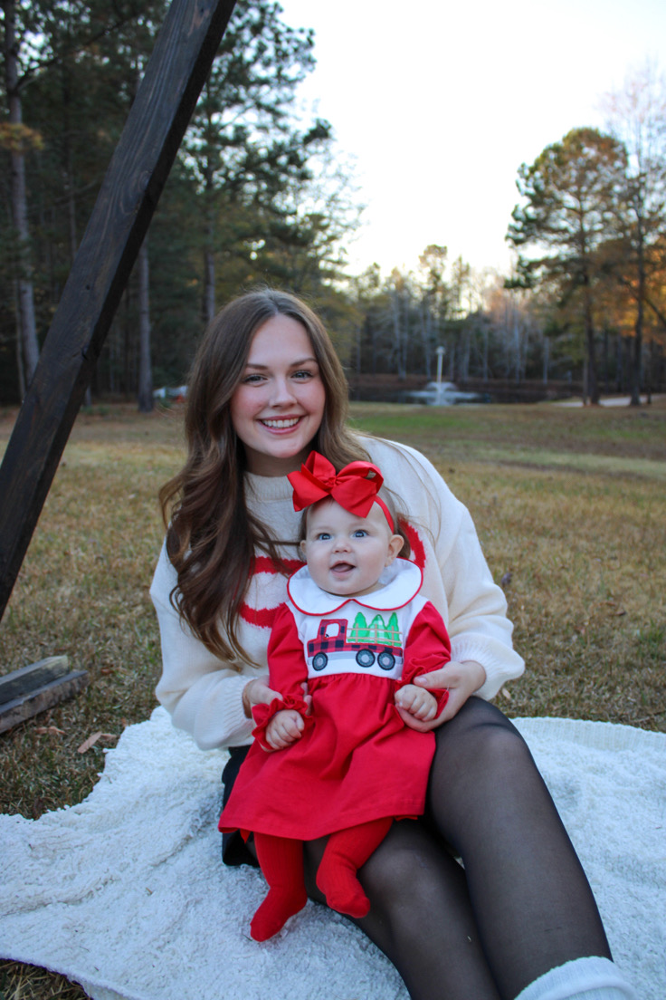
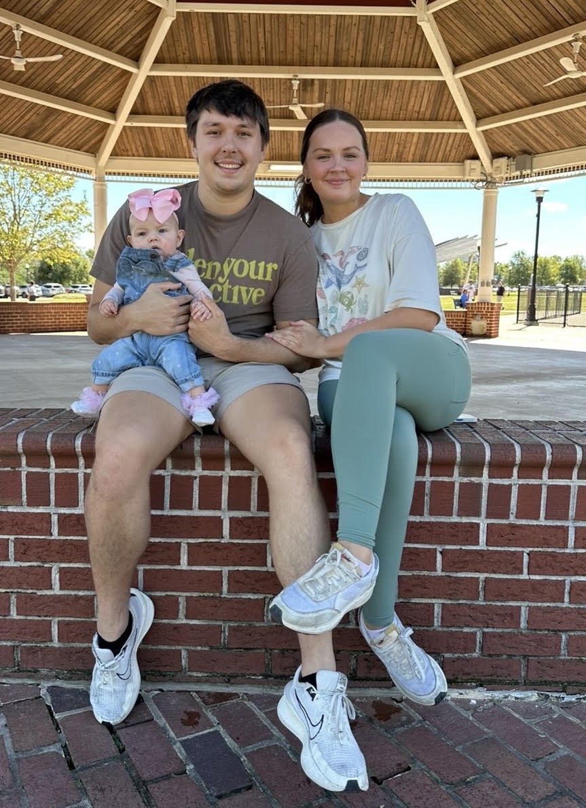

About
Computer Engineering + Electrical Engineering
I am a Clemson University student graduating in May 2026 with B.S. degrees in Computer Engineering and Electrical Engineering. My work is centered on embedded systems, PCB design, computer vision, control, and hardware/software integration.
Most of what I enjoy building sits across the boundary between software and electronics: Raspberry Pi and microcontroller-based systems, custom boards in KiCad, motion and sensor integration, and the debugging required to make the whole system operate reliably.

About Me
I am from North Charleston, South Carolina. Early on, building computers and repairing electronics pushed me toward engineering because I liked understanding why a system worked, failed, or behaved unexpectedly at the hardware level.
That interest grew into project work around microcontrollers, circuit behavior, PCB layout, computer vision, distributed systems, and projects that demand coordination between hardware and software.
Beyond Engineering
Family is a big part of how I think about work. Cadle and Delilah keep my priorities grounded and shape how I think about discipline, ownership, and long-term direction.
Outside engineering I spend time swimming, training, playing basketball, and being with family.


Technical Focus
Tools and areas I use most across class and project work.
Embedded / Hardware
- Raspberry Pi, ESP32, STM32, GPIO, PWM, ADC, UART, I2C, and SPI
- Sensor integration, motor control, hardware bring-up, and bench debugging
- Board-level assembly, soldering, and full-system integration
PCB Design
- KiCad, 2-layer and multi-layer routing, DRC, and Gerber generation
- Power distribution, grounding, motor-driver support, and connector planning
- Fabrication handoff, board assembly, and rework
Software / Programming
- C, C++, Python, MATLAB, JavaScript, SQL, and Verilog
- OpenCV, YOLO, segmentation, edge detection, and vision pipeline work
- Control logic, automation scripts, and debugging across shared codebases
Tools / Systems
- Linux, Git/GitHub, SSH, MPI, NFS, LTSpice, and Simulink
- Vivado, Vitis, MATLAB App Designer, PLCs, and ladder logic
- Hardware/software integration under real timing, control, and reliability constraints